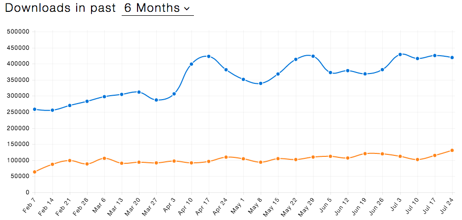

Meteor + React
Modern Web App Development
Created by 荆雷 in July 2016
slides.jinglei.me/20160731Meteor ?
Full-stack JavaScript framework for web & mobile


- Reactive - auto update
- Optimistic UI
(Latency Compensation / Dead Reckoning)
npm
npm package since Meteor 1.3
Latest News

Meteor 1.4 released on 27.July
- Node.js 4.4.7 LTS
- MongoDB 3.2.6 - WiredTiger storage engine
- Relaxing core package versions
SQL
Meteor 1.5 on the way - Apollo (GraphQL) => SQL
Frontend
Blaze · Angular · React
React vs Angular
Blaze

- Simple - Handlebar Style, Easy to Learn
- Limit - Only in Meteor
Angular
- Monolithic - A Complete Framework
- Dirty Check - Performance Issue
- Bidirectional - Two-way binding is complicated
- 2.0 in TypeScript - Serious?
Atwood's Law

Any application that can be written in JavaScript, will eventually be written in JavaScript.
React
- Component - Decoupling / Encapsulation
- Unidirectional Data Flow - Easier to Reason
- Reactivity - Auto Update, Less Code (Schedule)
- Virtual Dom - Performance Improvement
Meteor as FLUX

WebSocket - Real Time
- Not RESTful HTTP - Pub/Sub pattern
- Full-duplex on a single TCP connection
- Meteor DDP
Reactive Updating
Reactive Programming
reactive source · reactive computation
class App extends Component {
...
}
export default createContainer(() => {
Meteor.subscribe('tasks');
return {
tasks: Tasks.find({}, { sort: { createdAt: -1 } }).fetch(),
incompleteCount: Tasks.find({ checked: { $ne: true } }).count(),
currentUser: Meteor.user(),
};
}, App);
Optimistic UI(Latency compensation · Dead reckoning)

什么是 Meteor 的 Optimistic UI
No Optimistic UI
No Optimistic UI
// Insert only on server side
if (Meteor.isServer) {
Meteor._sleepForMs(2000) //simulate network delay
insertTask()
}
// no client side insert stub
Optimistic UI
Optimistic UI
const insertTask = () => Tasks.insert( newTask )
//Insert data on client & server
if (Meteor.isServer) {
Meteor._sleepForMs(2000) //simulate network delay
insertTask()
}
if (Meteor.isClient) {
insertTask()
}
Optimistic UI failed
Optimistic UI failed
// Failed to insert;
if (Meteor.isServer) {
Meteor._sleepForMs(2000)
// No insert to simulate failure
}
if (Meteor.isClient) {
insertTask()
}
Thank You
Q&A
例子代码地址